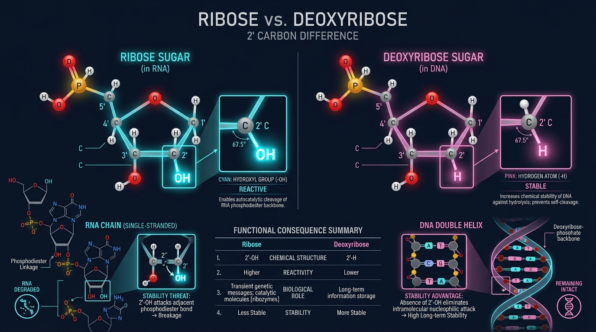
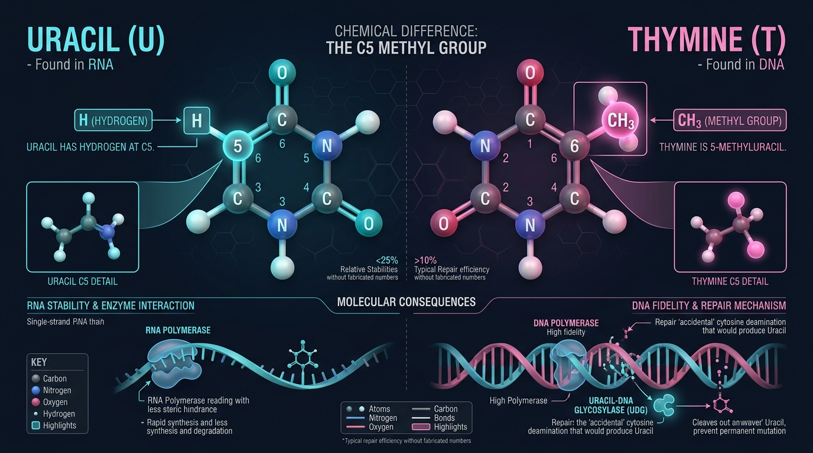
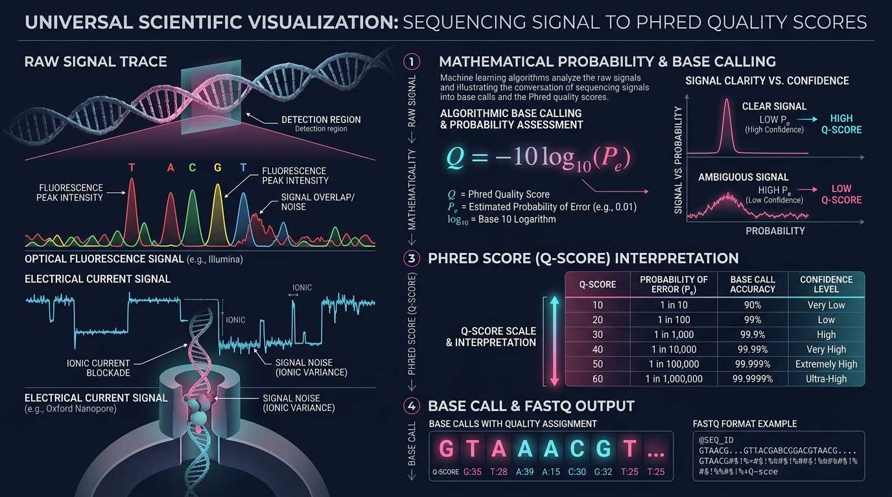
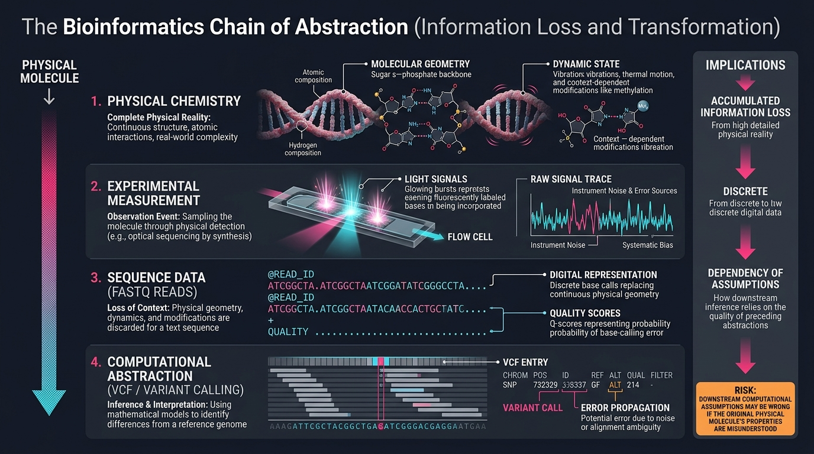

TOPIC 13
IDENTIFYING NUCLEIC ACIDS
From Chemical Signatures to Computational Classification
Why Are We Starting This?
Imagine we're sitting in a quiet cafe with my laptop open between us. I pull up a raw bioinformatics data file and point to a single fragment: "Tell me—is this fragment DNA or RNA?"
Your first instinct might be: "Let me search for Uracil or Thymine." But that is the great bioinformatics trap! A computer does not inherently know what a 'T' or a 'U' means; it only sees ASCII characters stored in memory.
Bioinformatics operates on representations of molecules. If you misunderstand the physical molecule sitting at the beginning of the experiment, your downstream software will faithfully compute a mathematically flawless analysis of the completely wrong biological object.
We are starting here because computational classification must mirror physical chemistry. To write robust algorithms, we must trace how an atom turns into a data feature.
Where Does This Fit?
This topic forms the foundational bridge connecting organic chemistry, experimental lab protocols, and software algorithms. We follow the information through four cascading layers:
The 2′ carbon (H vs OH) and pyrimidine C5 methyl substituent.
Transesterification, backbone self-cleavage, and sugar puckering.
Library preparation (cDNA conversion), sequencer signals, and Phred scores.
Feature vectors, Bayesian classification, and pipeline error propagation.
1. First Principles: Nucleotide Anatomy
Before distinguishing DNA from RNA, let's nail down what we are actually classifying. When a parser encounters a record, it must separate three core structural components:
The sugar is a 5-carbon pentose ring. In organic nomenclature, we number the sugar carbons with a prime symbol: \(1′, 2′, 3′, 4′, 5′\). That prime isn't just decoration; it distinguishes the sugar ring atoms from the unprimed positions (like \(C5\) or \(N1\)) on the nitrogenous base.
The most fundamental physical difference between DNA and RNA is the sugar, not the base:
- DNA: Contains 2′-deoxyribose (bearing a \(2′\text{-H}\)).
- RNA: Contains ribose (bearing a \(2′\text{-OH}\)).
Look at the chemical formulas: Ribose is \(\mathrm{C_5H_{10}O_5}\), while 2-deoxyribose is \(\mathrm{C_5H_{10}O_4}\). The prefix deoxy- literally signifies the loss of that single oxygen. But what does that one missing oxygen really do?
The 2′ Carbon: The Ultimate Lie Detector
This is Step 1 of our worked example. If someone gives you an unknown chemical file, you inspect the 2′ position first:
Why does one oxygen matter so much? In \(\mathrm{C2′-H}\), the bond is essentially non-polar. But in \(\mathrm{C2′-OH}\), oxygen is brutally electronegative compared to hydrogen and carbon. This creates a strongly polarized bond:
This single hydroxyl group participates in hydrogen bonding, coordinates local hydration shells, alters conformational flexibility, and—most dangerously—acts as an active nucleophile.

Thermodynamics & Self-Cleavage
Because RNA contains a 2′-OH, it carries the seeds of its own destruction. Under slightly alkaline or physiological conditions, the hydroxyl oxygen deprotonates into an alkoxide ion (\(2′\mathrm{O^-}\)). This oxygen launches an intramolecular nucleophilic attack on the adjacent phosphorus atom in the phosphodiester backbone:
This produces a cyclic \(2′,3′\text{-phosphate}\) intermediate and severs the RNA strand! DNA has only a \(2′\text{-H}\), completely blocking this attack pathway. This is why intact dinosaur DNA can theoretically survive in amber for millennia, while RNA degrades in minutes on a lab bench.
Thermodynamically, whether any molecular process or structural fold occurs depends on the Gibbs Free Energy equation:
Equation Breakdown: Gibbs Free Energy
- \(\Delta G\): Gibbs Free Energy Change (\(\text{kJ/mol}\) or \(\text{kcal/mol}\)). If \(\Delta G < 0\), the process or fold is thermodynamically spontaneous.
- \(\Delta H\): Enthalpy Change. Reflects energy released from chemical bond formation, hydrogen bonding, and base stacking (\(\Delta H < 0\) is favorable).
- \(T\): Absolute Temperature in Kelvin (\(K = ^\circ\text{C} + 273.15\)).
- \(\Delta S\): Entropy Change. Measures disorder; folding a flexible single strand into a helix decreases entropy (\(\Delta S < 0\)), creating an entropic penalty \(-T\Delta S > 0\).
RNAfold) solve:
Conformationally, RNA's 2′-OH creates steric hindrance that forces the ribose ring into a \(C3′\text{-endo}\) sugar pucker (favoring rigid A-form geometry), whereas B-form DNA relaxes into a \(C2′\text{-endo}\) pucker.
Degradation Kinetics & Data Bias
Here is where physical chemistry directly impacts computational counts. Thermodynamics tells us if a reaction is possible (\(\Delta G < 0\)), but kinetics tells us how fast it happens.
RNA cleavage follows a first-order decay process governed by the differential rate law:
Equation Breakdown: First-Order RNA Degradation
- \([R]\): Concentration of intact, full-length RNA remaining at time \(t\) (\(\text{mol/L}\) or molecules/cell).
- \([R_0]\): Initial starting concentration of intact RNA at time zero (\(t=0\)).
- \(\frac{d[R]}{dt}\): Instantaneous rate of RNA loss over time.
- \(k\): First-order degradation rate constant (\(\text{time}^{-1}\), e.g., \(\text{s}^{-1}\) or \(\text{min}^{-1}\)). Determined by temperature, pH, and divalent cations (\(\mathrm{Mg^{2+}}\)).
- \(t\): Elapsed time during sample handling, lysis, or storage.
- \(e\): Euler’s constant (\(\approx 2.71828\)), the natural base of exponential decay.
- \(t_{1/2}\): Half-life, the time required for 50% of molecules to degrade:
\( t_{1/2} = \frac{\ln 2}{k} \approx \frac{0.693}{k} \)
2. Step 2 — Scan the Pyrimidines
Now we move from the sugar to the nitrogenous bases. The relevant comparison is Uracil vs Thymine:
Look closely at the pyrimidine ring: Uracil has a hydrogen at carbon 5 (\(\mathrm{C5-H}\)). Thymine has a bulky methyl group at carbon 5 (\(\mathrm{C5-CH_3}\)).
In Topic 11, we explored why DNA invested the cellular energy to use Thymine instead of Uracil: Spontaneous cytosine deamination (\(C \rightarrow U\)) happens constantly. If DNA used Uracil normally, repair enzymes couldn't tell if a 'U' was a legitimate base or a damaged Cytosine. The methyl tag on Thymine allows repair enzymes to recognize Uracil as foreign DNA damage and replace it.
The Data Disconnect: If repair fails and \(C \rightarrow U\) replicates into a \(T:A\) base pair, your variant caller outputs a VCF record:
Notice: The VCF does not say "this base suffered hydrolytic deamination." It only records the sequence difference. The physical mechanism has been abstracted into digital letters.

The Logic Correction & Worked Examples
Many textbooks state: "If you see a methyl group at C5 and a 2′-H, it's Thymine/DNA; if C5 lacks methyl and 2′-OH is present, it's Uracil/RNA."
Chemically, that statement is dangerous because it conflates two independent lines of evidence:
- Evidence 1 (Sugar): \(2′\text{-H} \implies \text{deoxyribose}\); \(2′\text{-OH} \implies \text{ribose}\).
- Evidence 2 (Base): \(\mathrm{C5-CH_3} \implies \text{Thymine}\); \(\mathrm{C5-H} \implies \text{Uracil}\).
You must evaluate them separately, then integrate:
Sugar: \(2′ = \mathrm{H}\) (\(\text{deoxyribose}\)) | Bases: A, T, G, C (\(\mathrm{C5-CH_3}\) present).
\(\implies \text{Combine: Deoxyribose} + \text{Thymine} \implies \mathbf{DNA}\).
Sugar: \(2′ = \mathrm{OH}\) (\(\text{ribose}\)) | Bases: A, U, G, C (\(\mathrm{C5-H}\) present).
\(\implies \text{Combine: Ribose} + \text{Uracil} \implies \mathbf{RNA}\).
Suppose your mass spectrometer reveals: \(2′\text{-OH}\) (ribose) alongside Thymine (\(\mathrm{C5-CH_3}\))!
Do you blindly scream "DNA!" because you saw a T? Absolutely not.
The sugar is undeniably ribose. This occurs routinely in real biology: transfer RNAs (tRNAs) feature 5-methyluridine (ribothymidine,
rT), synthetic mRNA therapeutics (like COVID vaccines) use methylated bases to evade immune detection, and PCR assays use synthetic fluorophore-labeled chimera probes.Physical Signal to Base Calling
How does a physical molecule actually transition into a text file? A sequencer never directly sees an 'A', 'C', 'G', or 'T'. It measures raw continuous analog physics:
Equation Breakdown: Instrument Signal Model
- \(S\): The observed instrument physical signal trace (e.g., photon emission intensity across color filters in Illumina, or picoampere electrical current blockade in Oxford Nanopore).
- \(M\): The true underlying physical molecular state (which base was incorporated).
- \(E\): Experimental state variables (flowcell temperature, enzyme kinetics, laser power, fluorophore fading).
- \(\epsilon\): Stochastic measurement noise (detector thermal noise, optical crosstalk, background sensor jitter).
- \(P(B|S)\): Posterior probability that candidate base \(B \in \{A,C,G,T\}\) produced signal \(S\).
If the signal is crisp, \(P(C|S) = 0.9999\). If fluorophores overlap or current jitters, \(P(C|S)\) drops to \(0.85\). This uncertainty is packaged mathematically into a Phred Quality Score.
The Phred Quality Score (\(Q\))
In 1998, Phil Green and Brent Ewing introduced the Phred score to standardize sequencer uncertainty into an explicit logarithmic scale:
Equation Breakdown: Phred Quality Score
- \(Q\): Phred Quality Score (typically integer 0 to 40+).
- \(-10\): Decibel multiplier mapping microscopic decimals into intuitive positive numbers.
- \(\log_{10}\): Common base-10 logarithm.
- \(P_e\): Probability that the base call is an error.
- If \(P_e = 0.1\) (1 in 10 error) \(\rightarrow Q = -10 \log_{10}(10^{-1}) = \mathbf{10}\) (90% accuracy).
- If \(P_e = 0.01\) (1 in 100 error) \(\rightarrow Q = -10 \log_{10}(10^{-2}) = \mathbf{20}\) (99% accuracy).
- If \(P_e = 0.001\) (1 in 1,000 error) \(\rightarrow Q = -10 \log_{10}(10^{-3}) = \mathbf{30}\) (99.9% accuracy).
- If \(P_e = 0.0001\) (1 in 10,000 error) \(\rightarrow Q = -10 \log_{10}(10^{-4}) = \mathbf{40}\) (99.99% accuracy).
?', \(Q40\) is 'I'). Alignment tools (BWA) and variant callers (GATK) use \(P_e = 10^{-Q/10}\) to weight mismatched bases when calculating alignment and genotype likelihoods!

Hypotheses & Likelihood Ratios
Suppose you align 100 reads covering a genomic coordinate. 80 reads show C and 20 reads show T. A naive observer calculates the Allele Fraction:
Does this mean 20% of the patient's cells have a mutation? Not necessarily. As we learned in Topic 12, variant callers frame this as a test between competing statistical hypotheses:
- \(H_0\): The patient is normal homozygous \(C/C\); the 20 T reads are sequencer errors.
- \(H_1\): The patient has a real biological \(C \rightarrow T\) mutation.
Equation Breakdown: Likelihood Ratio & Bayes' Rule
- \(LR\): Likelihood Ratio. Quantifies how many times more probable the data is under \(H_1\) than under \(H_0\).
- \(D\): The observed pileup data (all base calls and their corresponding Phred quality scores).
- \(P(D|H_1)\): Likelihood of observing these reads if a biological variant is truly present.
- \(P(D|H_0)\): Likelihood of observing these reads purely through random instrument error.
- \(P(H_1)\): Prior probability of a variant at this locus (e.g., genome mutation rate \(\approx 10^{-8}\) or known gnomAD frequency).
- \(P(H_1|D)\): Posterior probability—the final confidence that the variant is real.
PCR Amplification: Non-Independence
Here is another trap: Are those 20 reads actually 20 independent biological observations?
During library preparation, DNA molecules are amplified via Polymerase Chain Reaction (PCR). Under \(n\) cycles of thermal replication, template count expands exponentially:
Equation Breakdown: PCR Amplification
- \(N\): Final count of amplified DNA molecules in the library.
- \(N_0\): Initial count of starting physical template molecules.
- \(E\): Amplification efficiency per thermal cycle (\(0 \le E \le 1\); ideally \(E = 1.0\) for perfect doubling).
- \(n\): Number of PCR thermal cycles (typically 20–35).
picard MarkDuplicates or UMI molecular barcode collapsing) to prevent PCR artifacts from being called as mutations.
3. Chemical Features Become Data Features
How does our initial physical identification problem become a machine learning classification problem? We map continuous chemical properties into discrete encoded features:
| Physical Property | Computational Feature | Encoded Value |
|---|---|---|
| \(2′\text{-OH}\) (Ribose) | sugar_2prime |
x₁ = 1 |
| \(2′\text{-H}\) (Deoxyribose) | sugar_2prime |
x₁ = 0 |
| \(\mathrm{C5-CH_3}\) (Thymine) | base_identity |
x₂ = 1 |
| \(\mathrm{C5-H}\) (Uracil) | base_identity |
x₂ = 0 |
Now every nucleotide becomes a 2-dimensional feature vector: \( X = (x_1, x_2) \). A machine learning classifier estimates the class probability:
The Decision Tree: A robust parser doesn't use rigid, brittle if-statements. It constructs a probabilistic hierarchy:
Notice the terminology: The evidence supports a classification; it never blindly "proves" it without context.
The RNA-Seq Trap & The 3 Levels
Here is where confusing representations destroys real experiments: RNA Sequencing (RNA-Seq).
The biological starting material is RNA. But standard Illumina sequencers cannot sequence RNA directly! The molecular biology workflow uses reverse transcriptase to synthesize a complementary DNA (cDNA) strand:
During reverse transcription, every Uracil in the RNA templates an Adenine, which subsequently copies into a Thymine (T) in the sequenced cDNA library.
When you open your FASTQ file and see ACGTACGT, if you don't know the molecular history of the sample, you might conclude: "This file has Ts, so the sample was DNA." Completely wrong! The biological source was RNA.
Always Ask These Three Questions:
- What was the biological molecule? (RNA extracted from tissue).
- What molecule was physically loaded into the sequencer? (cDNA).
- What alphabet does the data file use? (A, C, G, T).
This is why metadata is part of bioinformatics: \( \boxed{\text{Sequence} + \text{Metadata} > \text{Sequence Alone}} \).

Pipeline Error Propagation & The Master Model
In multivariable calculus and numerical analysis, when you pass an input \(X\) with error \(\delta X\) through a function \(Y = f(X)\), the downstream error propagates according to the partial derivatives:
Equation Breakdown: Pipeline Sensitivity & Error Propagation
- \(X_0\): The ground-truth physical molecular state in the biological cell.
- \(X_1 = f_1(X_0)\): The experimental measurement and sequencer signal output.
- \(X_2 = f_2(X_1)\): The digital sequence representation (FASTQ / BAM alignment).
- \(X_3 = f_3(X_2)\): The downstream biological conclusion (Variant call / Gene expression estimate).
- \(\frac{\partial f}{\partial X_i}\): The sensitivity coefficient of pipeline stage \(f\) with respect to upstream error \(\delta X_i\).
- \(\delta Y\): The total cumulative error in the final biological conclusion.
The Complete Master Model: Never memorize this topic as simply "U is RNA, T is DNA." Carry this causal chain with you throughout your entire bioinformatics journey:
Comprehensive Comparison Table
| Level of Observation | DNA | RNA | Bioinformatics Consequence |
|---|---|---|---|
| 2′ Substituent | \(2′\text{-H}\) | \(2′\text{-OH}\) | Primary classification discriminator |
| Sugar Type | 2′-deoxyribose (\(\mathrm{C_5H_{10}O_4}\)) | Ribose (\(\mathrm{C_5H_{10}O_5}\)) | Requires distinct chemical modeling |
| Sugar Pucker | \(C2′\text{-endo}\) (B-form helix) | \(C3′\text{-endo}\) (A-form helix) | Distinct structural prediction parameters |
| Canonical Pyrimidine | Thymine (\(T = U + \mathrm{CH_3}\)) | Uracil (\(U\)) | Base identity feature in data parsers |
| Chemical Stability | Immune to \(2′\text{O^-}\) self-cleavage | Susceptible to transesterification | Differential degradation biases library counts |
| Deamination Context | \(C \rightarrow U\) recognized as damage | \(C \rightarrow U\) matches native base pool | DNA preserves genome integrity via repair |
| Sequencer Library | Direct genomic DNA | Reverse transcribed cDNA | Sequenced molecules may differ from biological source |
| File Representation | FASTQ / BAM / VCF (A, C, G, T) | FASTQ (A, C, G, T) or normalized (U) | Metadata is mandatory for interpretation |